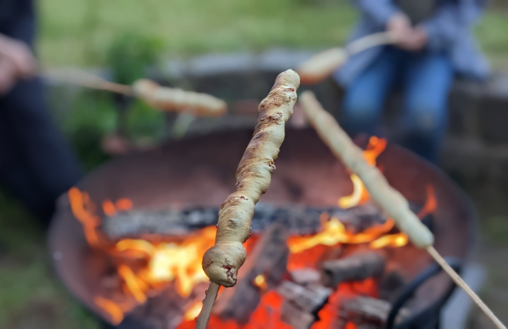

Stockbrot

Pour une dizaine de torsades :
- 400g de farine
- Un sachet de levure sèche
- Une demi-cuillère à café de sucre
- Une cuillère à café de sel (ou pas, si on utilise aussi des lardons)
- Trois cuillères à soupe d'huile d'olive
- 230mL d'eau tiède
- (Facultatif) Quelques branches de thym ou de romarin
- (Facultatif) 50g de lardons coupés bien petit
- (Facultatif) 50g de fromage râpé (genre gruyère)
- Mélanger ensemble la farine, la levure, le sucre, puis (une fois que le reste est mélangé) le sel.
- Ajouter l'eau et l'huile d'olive, et pétrir soit pendant 3 minutes à réglage rapide au robot, soit une bonne dizaine de minutes à la main. Il faut que la pâte ne colle plus, si ça n'arrive pas à la fin du temps de pétrissage on peut ajouter un peu de farine.
- Laver, sécher et couper et ciseler les feuilles de thum ou de romarin. Les ajouter avec les lardons et le fromage râpé à la pâte à pain.
- Partager la pâte en 10 petits pâtons, les recouvrir d'un torchon humide, et les laisser reposer une demi-heure, si possible dans un endroit assez chaud et/ou lumineux.
- Rouler chaque morceau de pâte entre ses doigts pour faire un long boudin assez fin. Appuyer le bout sur le bout d'une pique en bois (assez grosse, au moins 5mm de diamètre) pour bien que ça tienne, et enrouler le reste sur la pique.
- Faire rôtir la broche au-dessus d'un feu de bois en la tournant régulièrement. Il faut éviter que les flammes touchent le pain, mais quand même garder la broche assez proche du feu pour qu'elle cuise. Ça prend du temps, surtout si il y a des grosses flammes (la chaleur au-dessus des braises fonctionne le mieux).
- Arrêter de cuire lorsque ça a une belle couleur dorée sur tous côtés, déguster une fois tiédi.